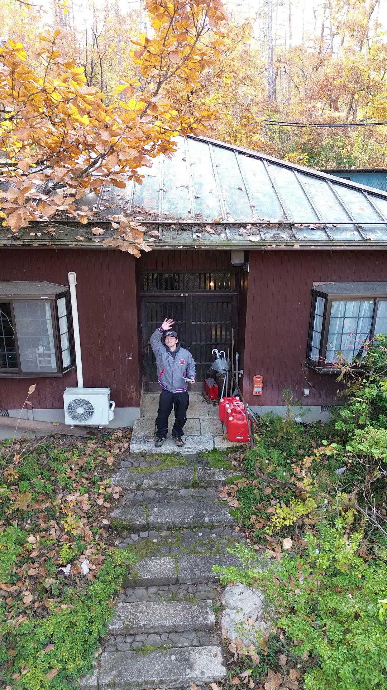
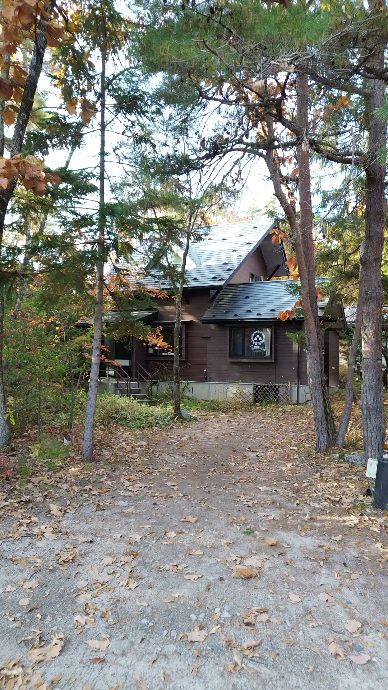
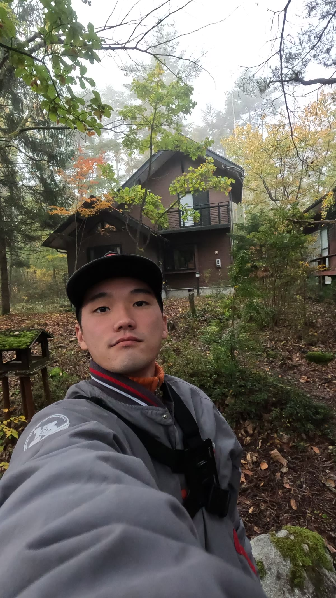
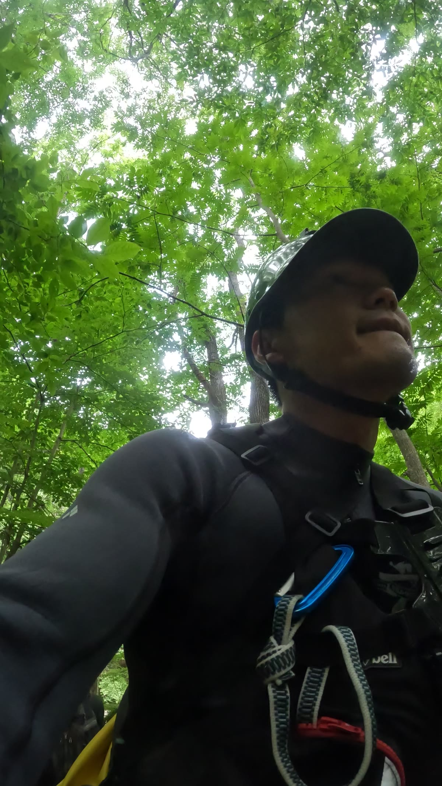
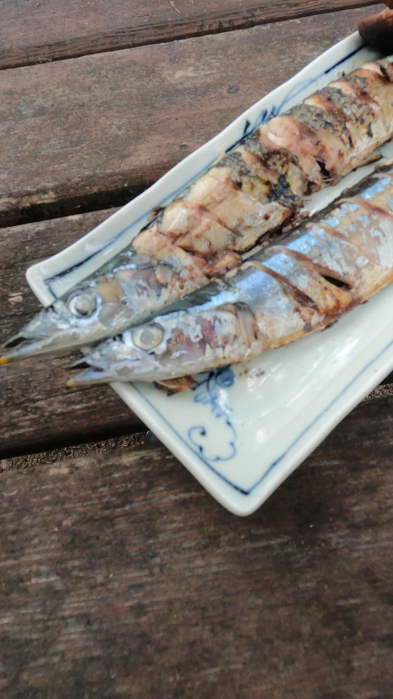
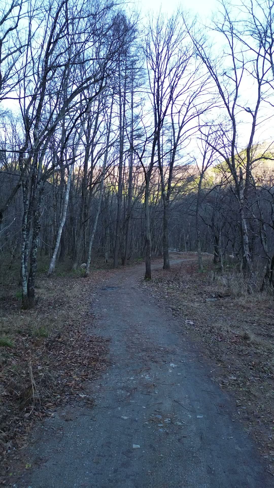
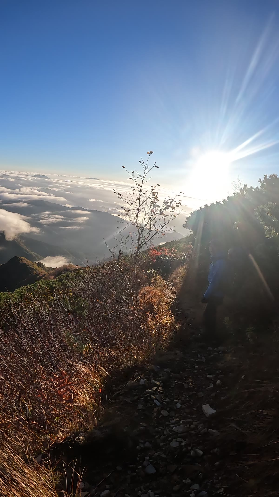
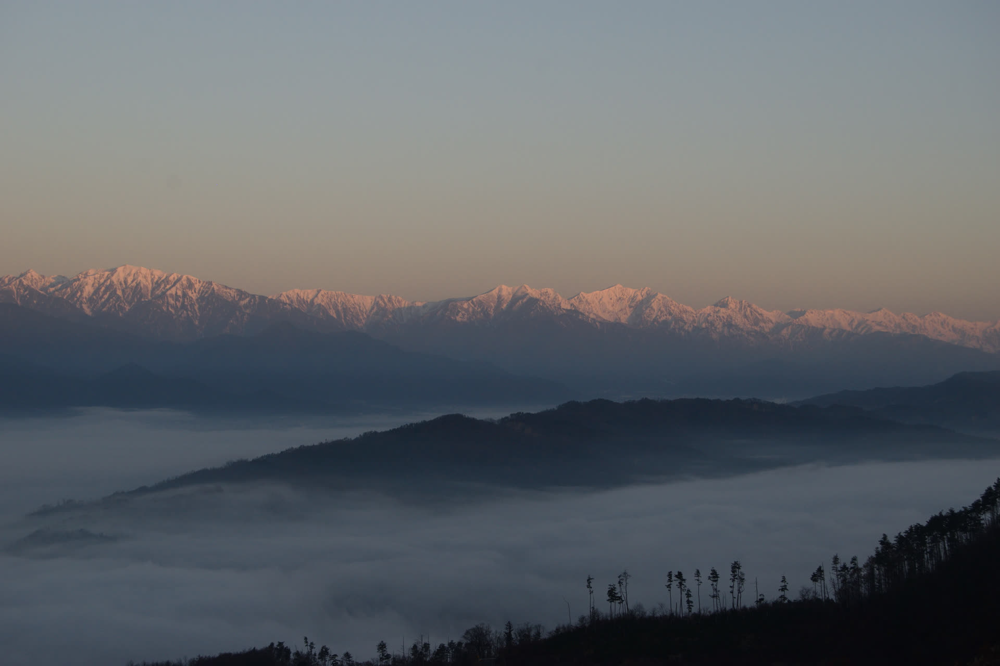

各セクションの推奨素材(a)と代替案(b)を、実際のLPスタイルで表示しています。a/b どちらを採用するか、または他候補が必要かお知らせください。

ネットの情報だけじゃ、たぶんわからない。3年前に移住して宿を2軒やってる当事者と、安曇野で1泊。夜はお酒を飲みながら、本音で話しましょう。

ネットの情報だけじゃ、たぶんわからない。3年前に移住して宿を2軒やってる当事者と、安曇野で1泊。夜はお酒を飲みながら、本音で話しましょう。

東京で働いていた20代、鬱になりました。逃げるように安曇野に来て…

東京で働いていた20代、鬱になりました。逃げるように安曇野に来て…

ゲストハウス灯のリビングで、宿のワインや日本酒を飲みながら。仕事はどうしてるか、家賃はいくらか、都会との落差は…

ゲストハウス灯のリビングで、宿のワインや日本酒を飲みながら。仕事はどうしてるか、家賃はいくらか、都会との落差は…

Pack Vacation の宿泊者限定ガイド「FOCUS MORNING TOUR」。朝、安曇野の自然の中を一緒に歩きます…

Pack Vacation の宿泊者限定ガイド「FOCUS MORNING TOUR」。朝、安曇野の自然の中を一緒に歩きます…
HERO: A / PROFILE: B / NIGHT: A / MORNING: B